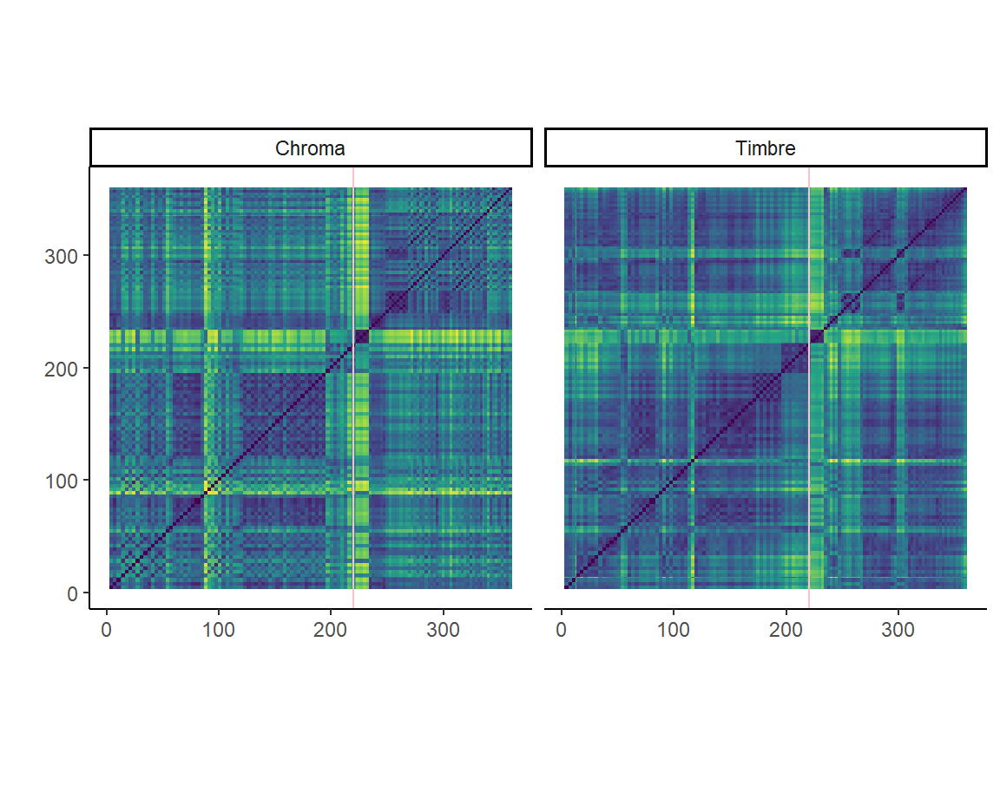
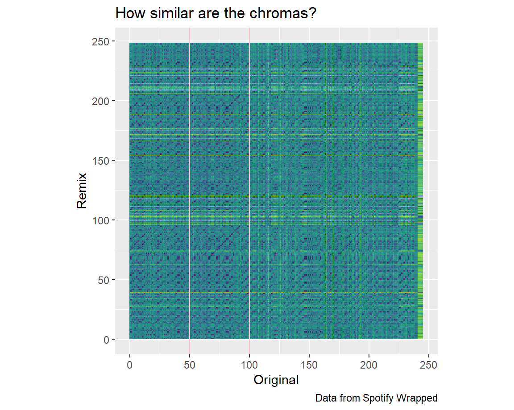

One of the coolest things I’ve found in pop music albums is tracks that include two songs inside it. These are curious to me because I never really understood how thay would decide on merging these tracks. Is it beacause they are similar?
This is the case of Hard Feelings/Loveless, a song that has a appeared in multiple of my Spotify Wrapped. The pink line shows the beginning of the transition to loveless. The transition begins with silence which is why the section is yellow/different.
For my corpus I am prospecting into teenage years. For this, I will be analyzing my Spotify Wrapped playlists from the years 2016 to 2023. As I approach my 20th birthday, this analysis serves as a reflective exploration of the music, emotions, and memories that defined my adolescence.
By examining the music I listen to, I aim to explore the evolution of my musical tastes, emotional landscapes, and life experiences throughout my teenage years. Some questions I could answer are: did the pandemic change my music taste? How does falling in love change my music listening?
Some limitations of this study are that especially in the first years Spotify Wrapped may not be completely representative as I would use other platforms to listen to music.
Regarding genre, I think there will be a common factor in all the playlists: Pop music. This might be especially prevalent in 2016 as I was not actively trying to discover other genres. A special case is 2017. I remember I started to like Lofi a lot but after a while, I stopped listening to it so it might be reflected in energy or danceability measures.
Here is my 2017 Spotify Wrapped:
As we can see in the graph I’ve moved over to music with less energetic sound. This may be because as I keep growing older I prefer sound that is calmer. In addition it seems like 2016 is specially energetic. This might be because when I started using Soptify/listening to music I only listened to pop music which is usually energetic.

When looking through all the songs from all the years I found out a song and its remix in different years: 2017 and 2021.
I wanted to find it how similar the time frames were. And, as we can see, thay are almost complete different, except the segment between the lines.